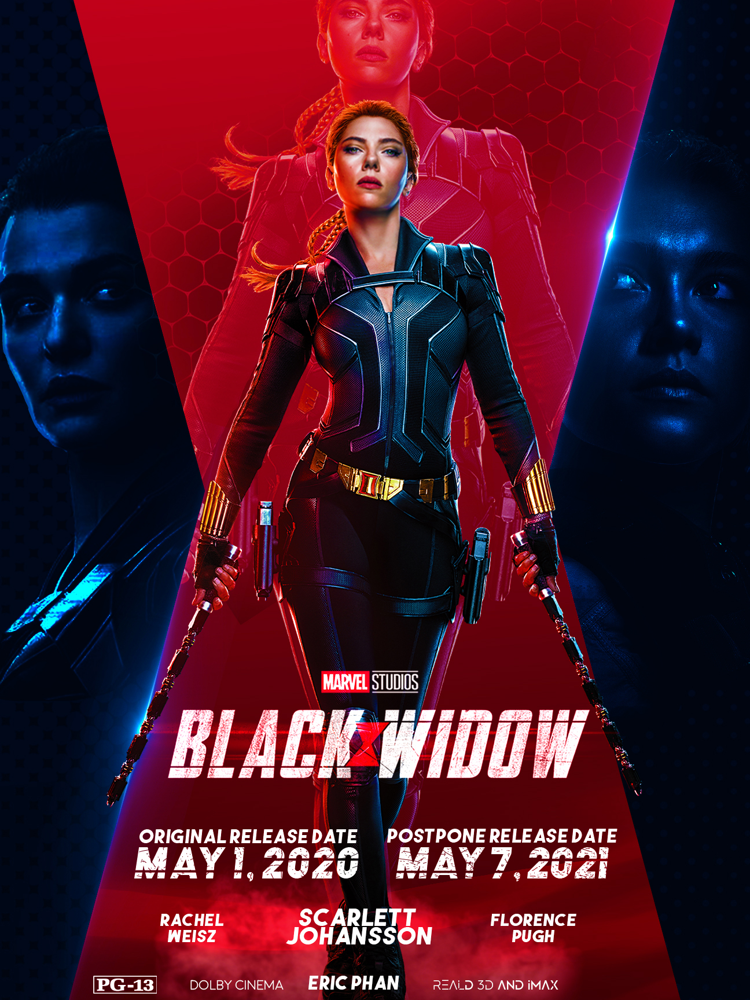
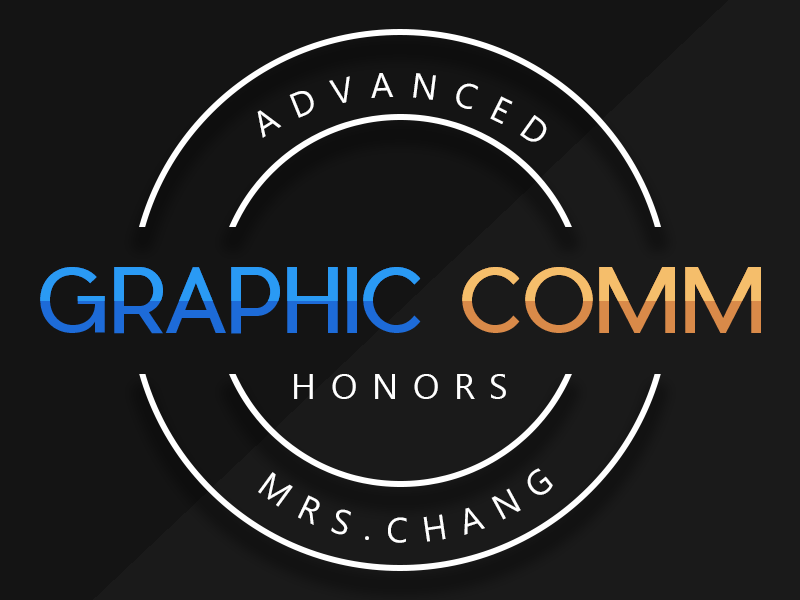
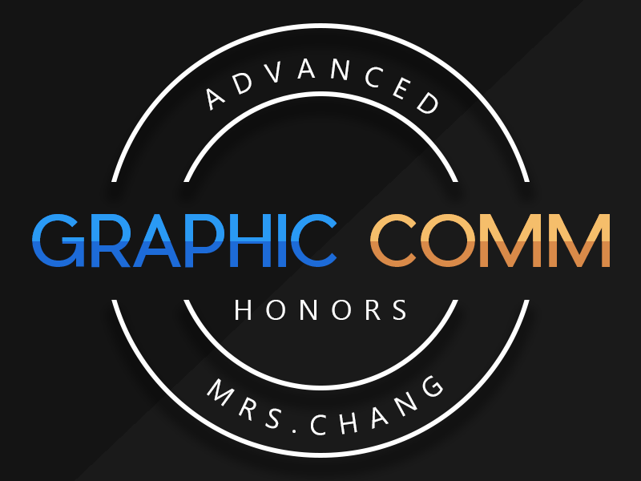

Eric Phan
My name is Eric Phan, and I am a passionate and driven individual with a deep interest in the field of Media and Cultural Studies. Throughout my academic journey, I have dedicated myself to understanding the profound impact that media has on shaping our cultural landscapes and identities.
I have always been captivated by the power of storytelling and its ability to influence and connect people from diverse backgrounds. This fascination led me to pursue a Major in Media and Cultural Studies, where I have had the privilege of delving into the complex dynamics between media, culture, and society. During my undergraduate years, I had the opportunity to engage in a variety of exciting projects and internships that have shaped my professional experience. One of the highlights of my journey was my internship with a renowned media production company. In this role, I gained firsthand experience in the production process, from pre-production planning to post-production editing. Collaborating with a diverse team of professionals allowed me to witness the intricate interplay between media creation and cultural representation. This experience solidified my passion for media and further motivated me to explore the nuanced ways in which media shapes our understanding of culture.
Additionally, I have been actively involved in academic research projects that have deepened my understanding of media and cultural studies. One project that stands out is my investigation into the representation of marginalized communities in mainstream media. Through extensive research and analysis, I explored the ways in which media perpetuates stereotypes and biases, as well as the potential for media to challenge and subvert dominant narratives. This research not only sharpened my critical thinking and research skills but also reinforced my commitment to fostering inclusivity and social justice through media. In addition to dedicating myself to my academic pursuits, I have also made a conscious effort to participate in extracurricular activities that have greatly contributed to my overall professional development. Specifically, I have actively engaged in various student-led media groups, where I have had the opportunity to collaborate with my peers and create thought-provoking content that challenges dominant perspectives and fosters meaningful conversations on important social issues. Through these experiences, I have honed my skills in effective communication, teamwork, and creative problem-solving, all of which I believe will serve me well in my future endeavors.
Looking ahead, I am excited to continue my academic journey in Media and Cultural Studies, as I believe that understanding the complexities of media and culture is crucial in today's rapidly evolving world. I am particularly interested in exploring the intersection of media, technology, and globalization, and how these factors shape our interconnected societies. Ultimately, my goal is to contribute to the field of Media and Cultural Studies through research, writing, and advocacy. I am driven by a desire to empower marginalized voices, challenge dominant narratives, and foster a more inclusive and equitable media landscape. With my solid academic foundation, hands-on experience, and unwavering passion, I am confident in my ability to make a meaningful impact in this field and contribute to a more diverse and progressive media landscape.
Experience
High School Club Member
• Keyclub Member
• Honor Society Member
• Vietnamese Student Association (VSA) Member
Cashier and Dishwasher
• Responsible for taking customer orders
• Cleaned dishes after hours
Graphic Designer
• Created personal art
• Helped other students with design
• Helped create graphic design for the school, like the graduation boards
• TA'd for over 30 students each semester
Education
Cypress High School
University of California Riverside
Portfolio



